Use NPXplore 1.0.0 or later. Run the main examples from top to bottom. Alternative statistical models are marked explicitly; choose one model before continuing.
This guide compares three or more groups using Group.
library(NPXplore)
# Run from the root of your cloned NPXplore repository.
Read NPX measurements and metadata. The package supplies the default HT annotation.
inputs <- NPXplore::npx_read_files(
data_file = "example/NPXfile.parquet",
meta_file = "example/metadata.csv"
)
Calculate QC from the original measurements and save reports under QC.
qc <- NPXplore::npx_qc_reports(
inputs$data, meta = inputs$meta, output_dir = "output_Group"
)
table(qc$sample_qc$QC)
Apply QC and cleaning. This example retains WARN samples and excludes final FAIL samples. The function also saves metadata_used.csv and QCreport_metadata.csv.
prepared <- NPXplore::npx_apply_qc(
inputs, qc = qc, include_warn = TRUE, include_fail = FALSE,
output_dir = "output_Group"
)
Save a QC-colored UMAP using measurements before sample exclusion.
qc_umap <- NPXplore::npx_umap(prepared$qc_data, variable = "QC")
NPXplore::npx_save_plot(qc_umap, "output_Group/QC/UMAP_QC_status.pdf")
Inspect the distributions of the cleaned samples. These functions save their plots automatically.
NPXplore::npx_iqrplot(
prepared$data, variable = "Group", output_dir = "output_Group/Results/Distribution"
)
NPXplore::npx_distribution_boxplot(
prepared$data, variable = "Group", output_dir = "output_Group/Results/Distribution"
)
Selected figures from the supplied demo pipeline run. Click a preview or the PDF link to open the original output. Results depend on the data and analysis settings.
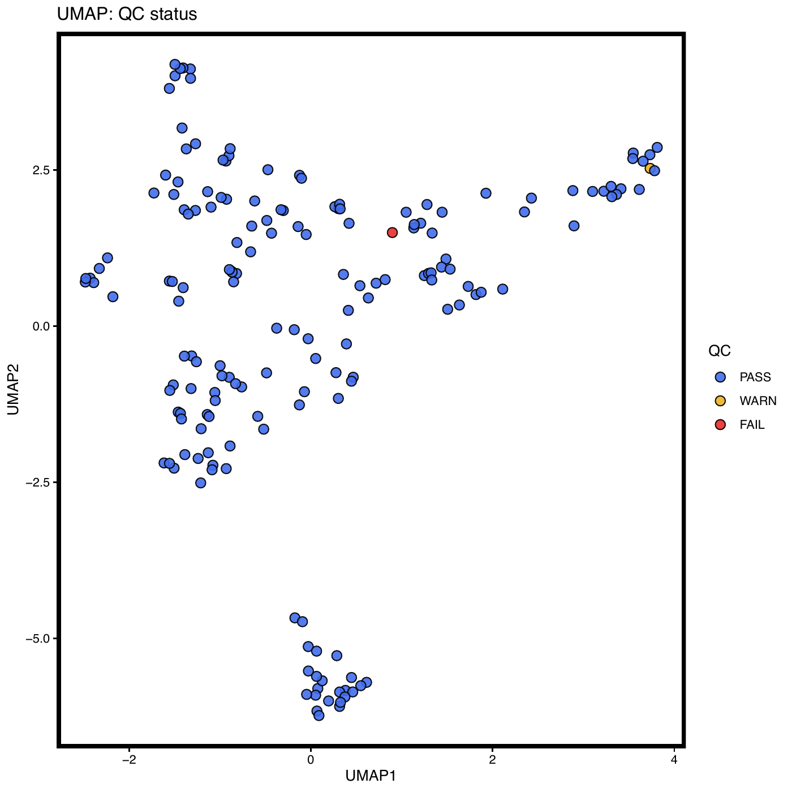
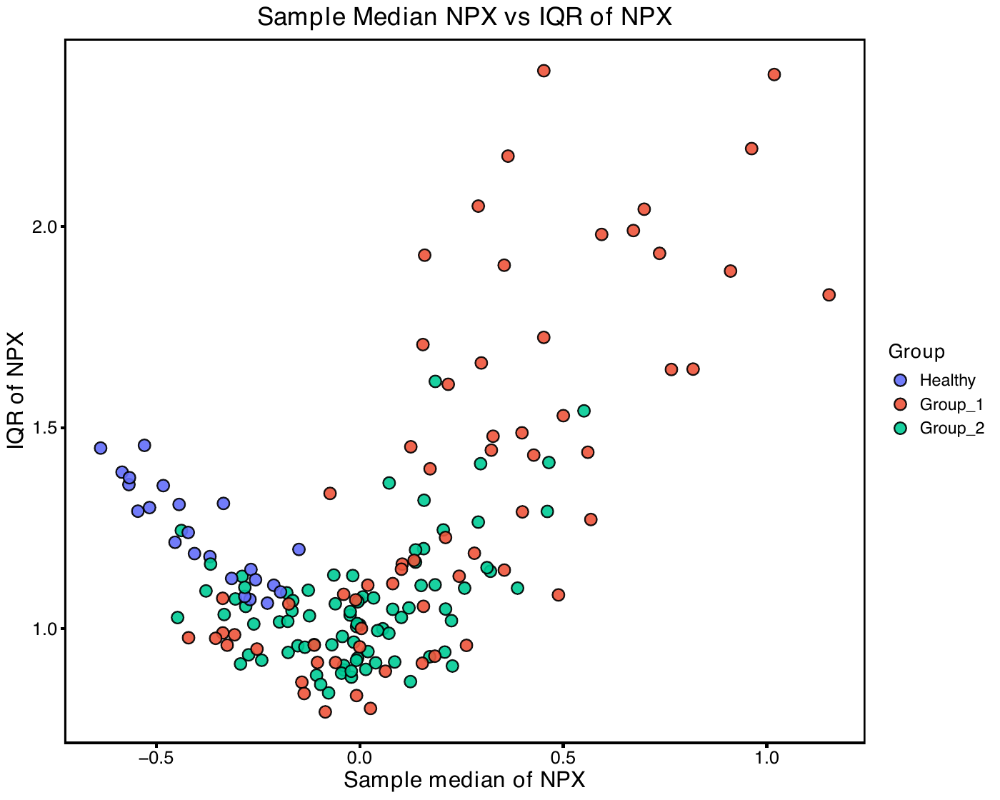
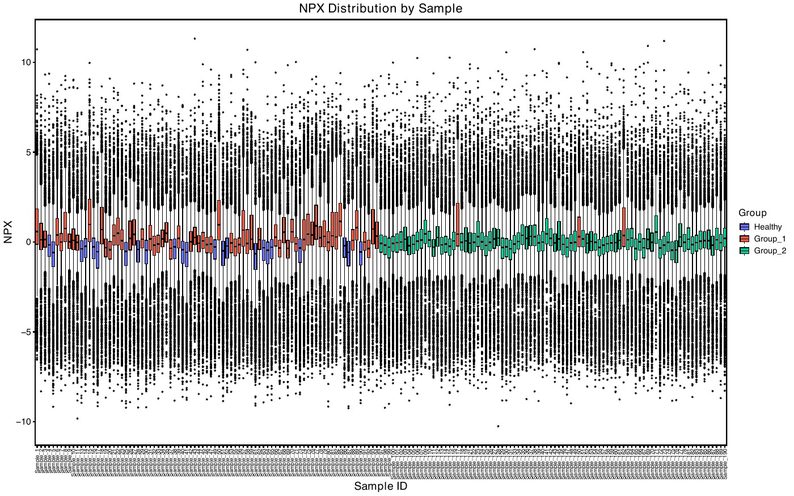
Save the original metadata-matched assay data and the cleaned NPX matrix under Tables. Only the exported matrix uses assay-median imputation; statistical analysis still uses prepared$data.
NPXplore::npx_export_tables(
prepared$data, raw_data = prepared$raw_data, output_dir = "output_Group"
)
The default DEP cutoff is adjusted p-value < 0.05. Statistical functions return all tested assays in analysis$result and selected DEPs in analysis$deps.
Use this model without covariates. Run its matching post-hoc test on the selected DEPs.
analysis <- NPXplore::npx_anova(prepared$data, variable = "Group")
posthoc <- NPXplore::npx_anova_posthoc(
prepared$data, analysis = analysis, variable = "Group"
)
To adjust for SEX and exposure, replace the two calls above with the following block. The example metadata stores sex in Sex; the code below creates the factor SEX from it. Both model covariates must contain no missing values and permit an estimable model. Keep exposure numeric for a continuous covariate, or convert it to a factor if it represents categories. Use the same covariates for ANOVA and post-hoc testing.
prepared$data$SEX <- factor(prepared$data$Sex)
analysis <- NPXplore::npx_anova(
prepared$data, variable = "Group", covariates = c("SEX", "exposure")
)
posthoc <- NPXplore::npx_anova_posthoc(
prepared$data, analysis = analysis, variable = "Group",
covariates = c("SEX", "exposure")
)
The API argument is covariates. ANOVA has no single directional Log2FC, so this workflow does not use a volcano plot. Post-hoc results describe pairwise group contrasts.
Save the complete statistical table and DEP table, together with the matching post-hoc results. save_npx = FALSE preserves the NPX files already saved in step 3.
NPXplore::npx_export_tables(
prepared$data, analysis = analysis, posthoc = posthoc,
output_dir = "output_Group", save_npx = FALSE
)
Cluster the DEP expression profiles using k-means. The default selects the cluster count using the silhouette index. scale_rows = FALSE keeps the original NPX scale; use TRUE when your goal is to cluster standardized relative patterns. At least four usable DEP profiles are needed, and insufficient or identical profiles can prevent clustering.
clusters <- NPXplore::npx_cluster_assays(prepared$data, analysis, scale_rows = FALSE)
Save the DEP table with cluster assignments, followed by the cluster heatmap and line plot.
NPXplore::npx_export_tables(
prepared$data, analysis = analysis, cluster_result = clusters,
output_dir = "output_Group", save_npx = FALSE
)
NPXplore::npx_cluster_heatmap(
prepared$data, analysis, variable = "Group", cluster_result = clusters,
output_dir = "output_Group/Results/DEPs/Clustering"
)
NPXplore::npx_cluster_lineplot(
prepared$data, analysis, variable = "Group", cluster_result = clusters,
output_dir = "output_Group/Results/DEPs/Clustering"
)
If clustering cannot run, omit cluster plots and cluster-specific GO. For all-DEP PPI, use cluster_result = NULL in step 10; cluster-dependent outputs will be reported as unavailable.
Selected figures from the supplied demo pipeline run. Click a preview or the PDF link to open the original output. Results depend on the data and analysis settings.
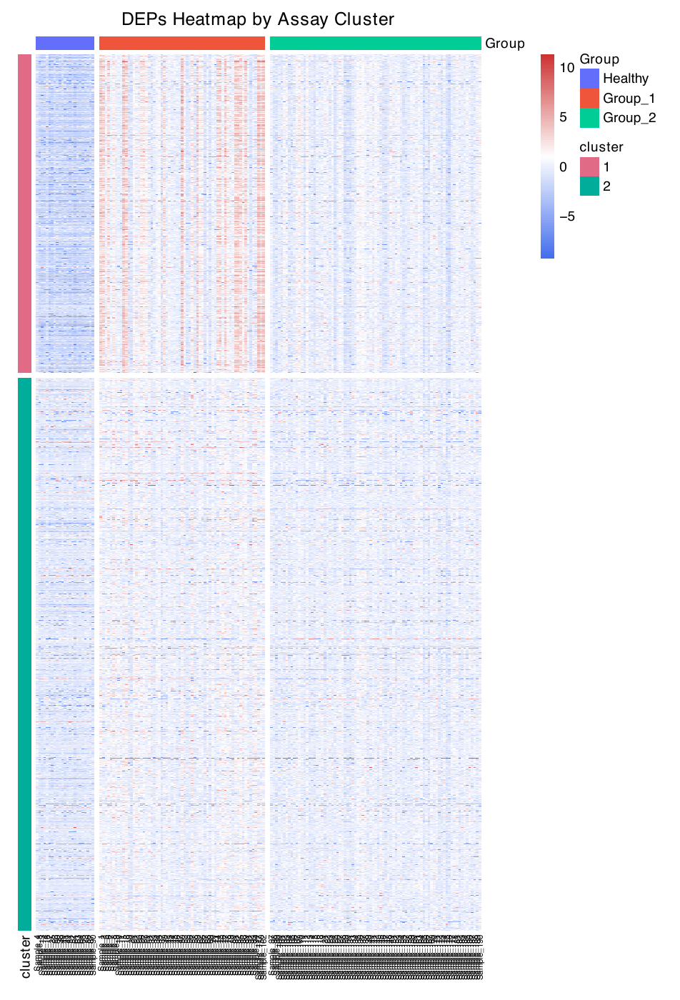
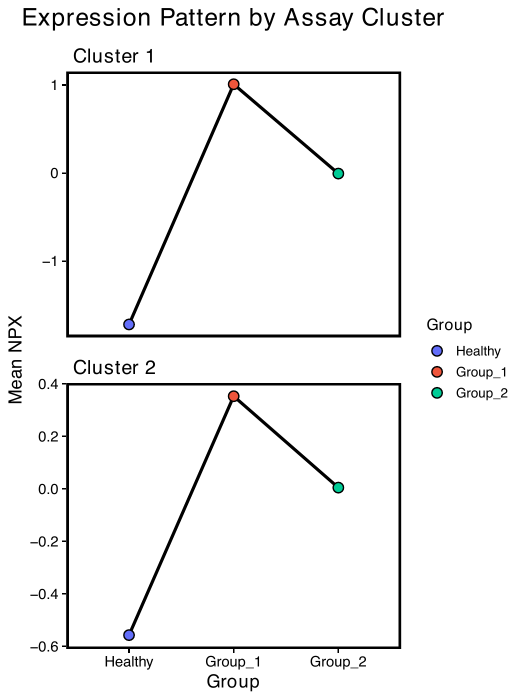
Calculate UMAP from the cleaned analysis data and save it.
umap <- NPXplore::npx_umap(prepared$data, variable = "Group")
NPXplore::npx_save_plot(umap, "output_Group/Results/UMAP/UMAP.pdf")
NPXplore::npx_save_plot(umap, "output_Group/Results/UMAP/UMAP.png")
Selected figures from the supplied demo pipeline run. Click a preview or the PDF link to open the original output. Results depend on the data and analysis settings.
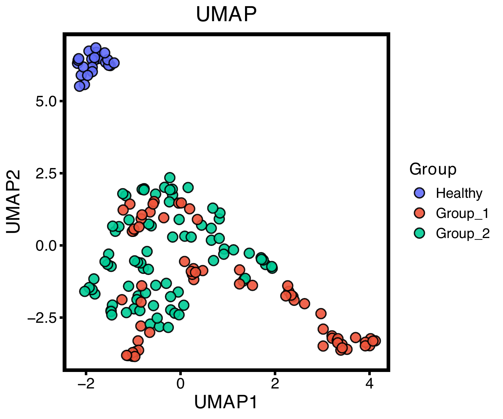
Plot NPX values without row-wise standardization, then save the heatmap.
heatmap_all <- NPXplore::npx_heatmap(prepared$data, variable = "Group", scale_rows = FALSE)
NPXplore::npx_save_plot(heatmap_all, "output_Group/Results/Heatmap/Heatmap_NPX.pdf")
Run this section only if analysis$deps contains assays.
heatmap_deps <- NPXplore::npx_heatmap(
prepared$data, variable = "Group", assays = analysis$deps$Assay, scale_rows = FALSE
)
NPXplore::npx_save_plot(heatmap_deps, "output_Group/Results/DEPs/DEPs_heatmap.pdf")
Use the annotation’s Human_Pathway assignments. This function creates and saves the pathway heatmaps.
NPXplore::npx_pathway_heatmaps(
prepared$data, analysis, inputs$anno, variable = "Group",
output_dir = "output_Group/Results/DEPs/Heatmap_Pathway"
)
Selected figures from the supplied demo pipeline run. Click a preview or the PDF link to open the original output. Results depend on the data and analysis settings.
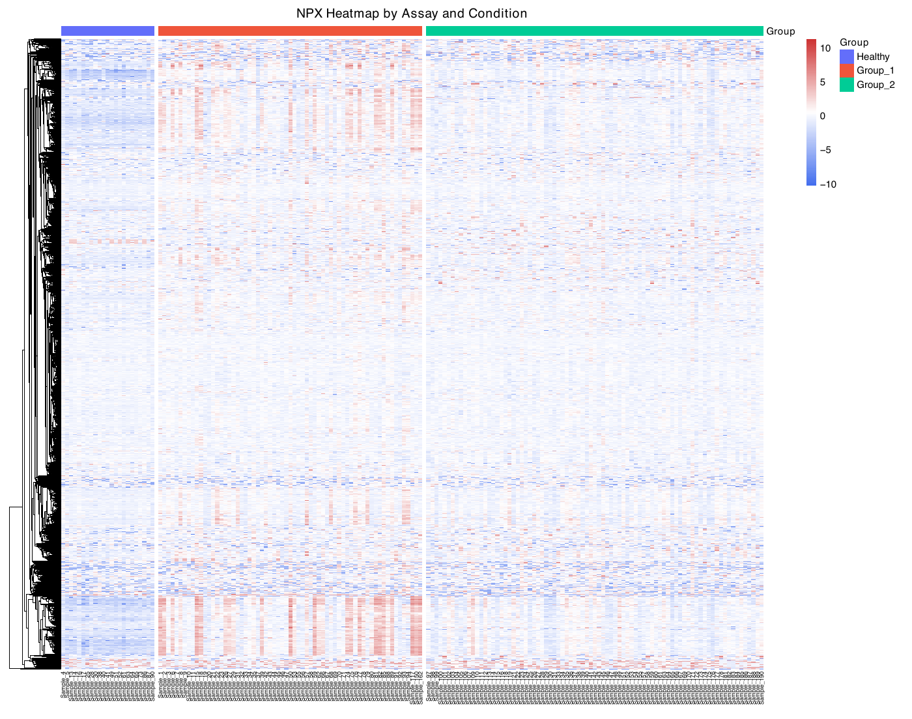
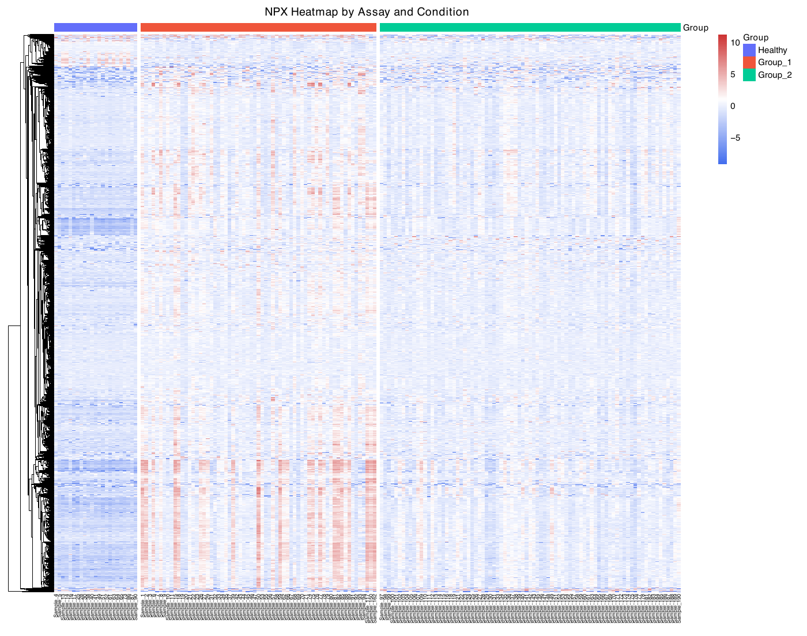
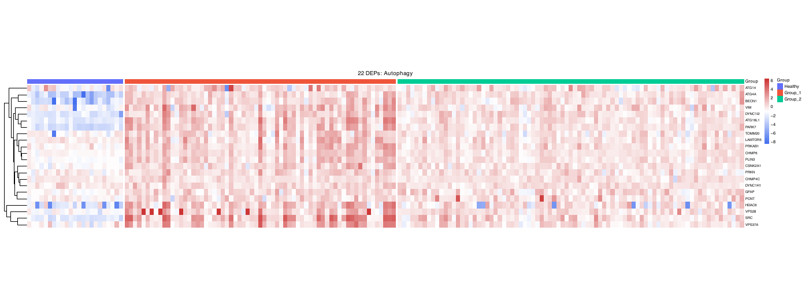
Save individual plots for all assays. This can take considerable time on large panels.
NPXplore::npx_dep_boxplot(
prepared$data, analysis, meta = prepared$meta, variable = "Group",
output_dir = "output_Group/Results/DEPs/Boxplot"
)
To save only DEP assays instead, add assays = analysis$deps$Assay to the call above.
Selected figures from the supplied demo pipeline run. Click a preview or the PDF link to open the original output. Results depend on the data and analysis settings.
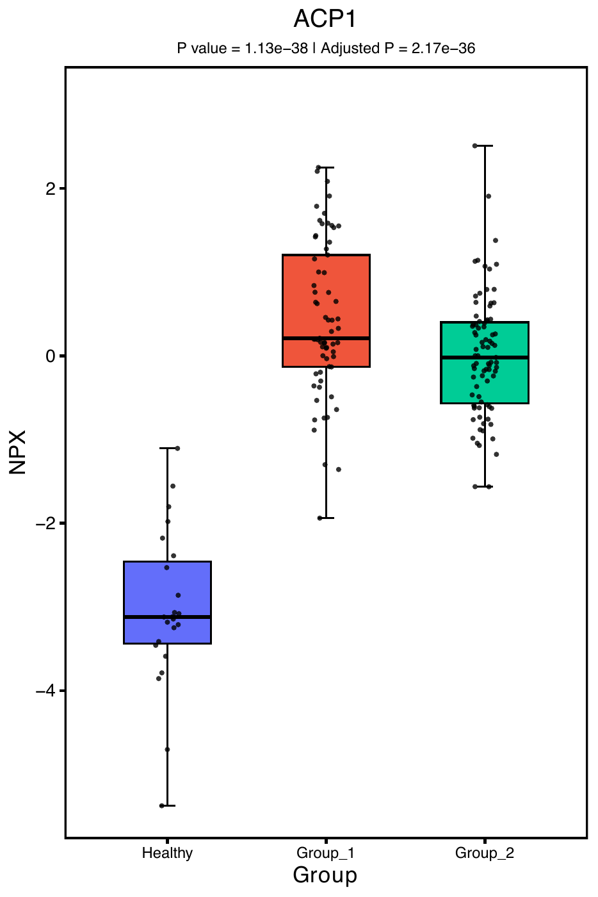
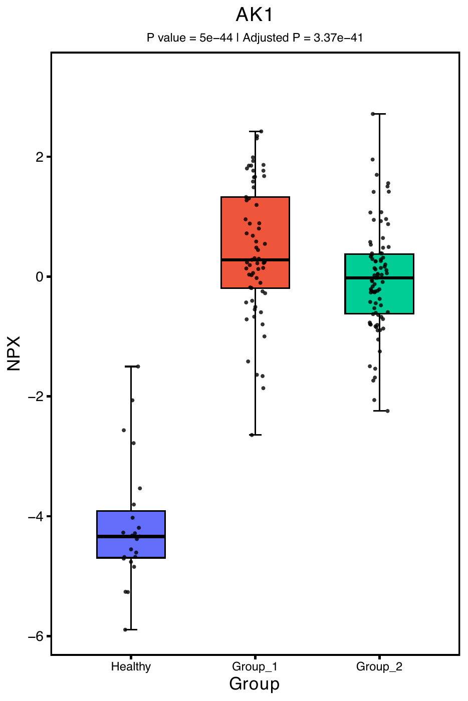
Analyze DEPs separately within each expression cluster. GO/KEGG queries send selected protein identifiers to Enrichr. The function saves tables and plots under Results/GeneOntology.
Select the top 10 terms by Combined Score among terms with adjusted p-value <= 0.05; display those terms in descending GeneRatio order.
functional <- NPXplore::npx_functional_analysis(
analysis, data = prepared$data, cluster_result = clusters,
output_dir = "output_Group", padj_cutoff = 0.05, top_n = 10
)
functional$status
functional$diagnostics
The diagnostics distinguish empty inputs, no significant terms, server/query errors, and output errors.
Selected figures from the supplied demo pipeline run. Click a preview or the PDF link to open the original output. Results depend on the data and analysis settings.
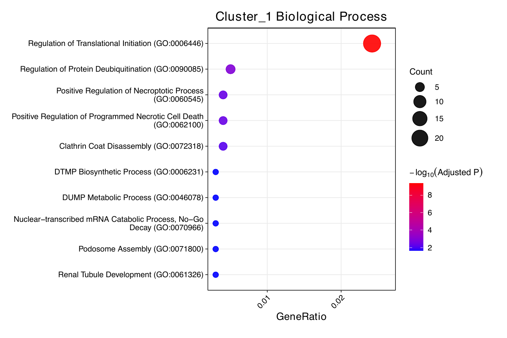
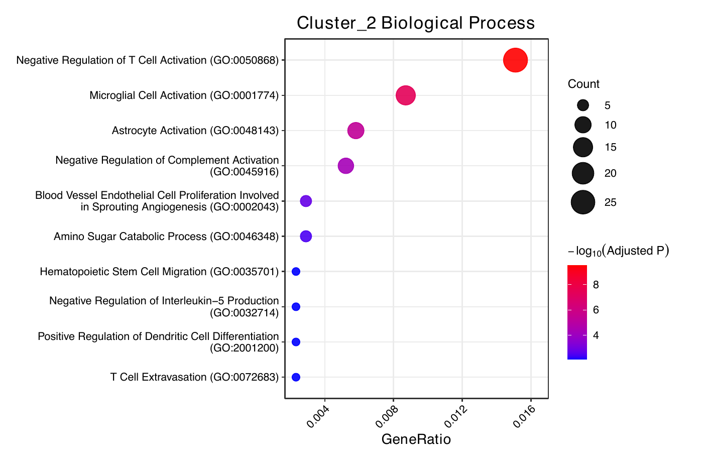
Create and save STRING networks for all DEPs and each expression cluster. Pathway networks use the same annotation as the pathway heatmaps.
ppi <- NPXplore::npx_ppi_network(
analysis, data = prepared$data, anno = inputs$anno, cluster_result = clusters,
output_dir = "output_Group"
)
ppi$status
ppi$summary
All-DEP and cluster networks color nodes by -log10(adjusted p-value). Pathway networks color nodes by cluster number.
Networks and node/edge tables are saved under Results/STRING_PPI; pathway outputs are under Results/STRING_PPI/Pathways. The summary distinguishes insufficient mapping, absent interactions, query failures, and export failures.
Selected figures from the supplied demo pipeline run. Click a preview or the PDF link to open the original output. Results depend on the data and analysis settings.
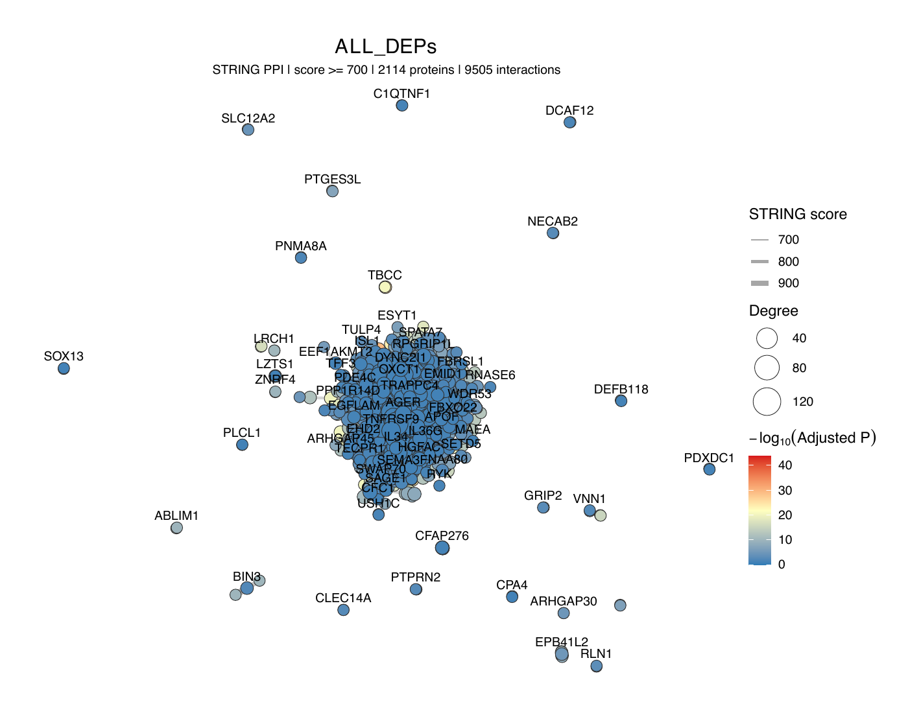
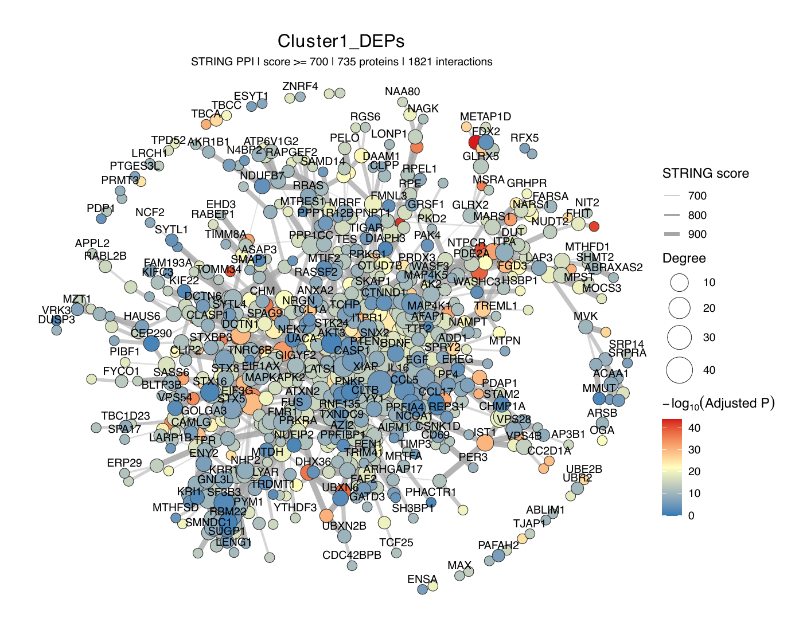